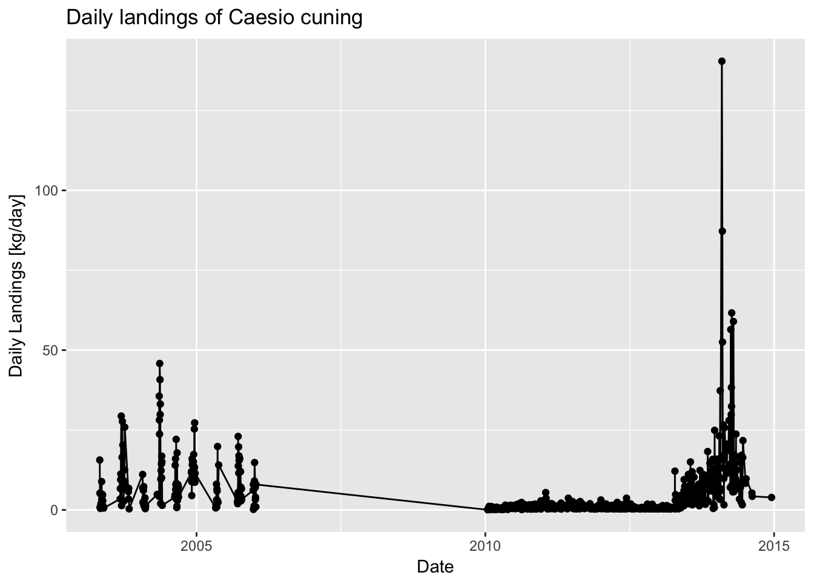
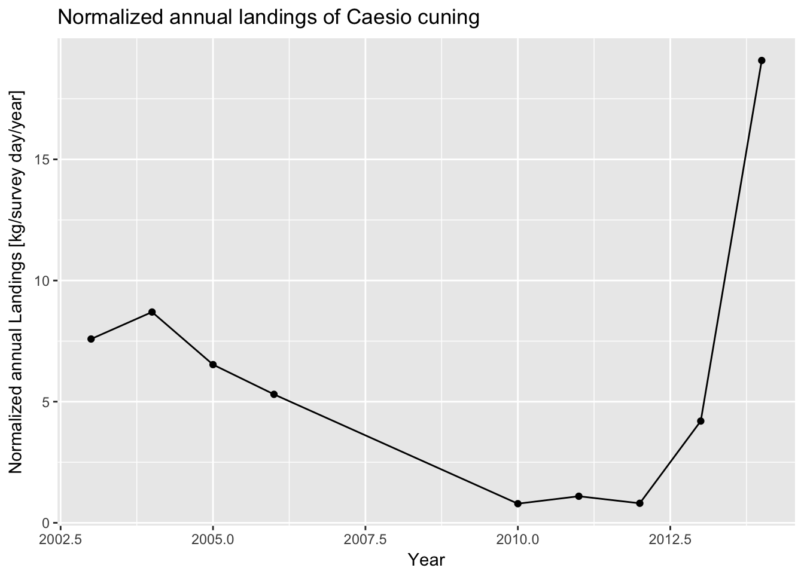
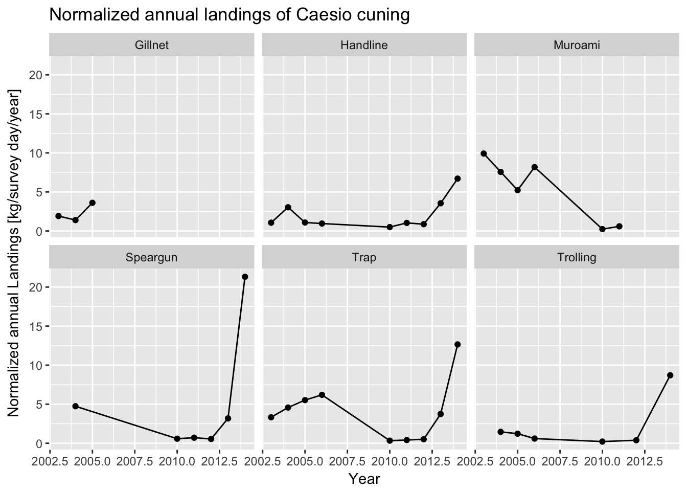
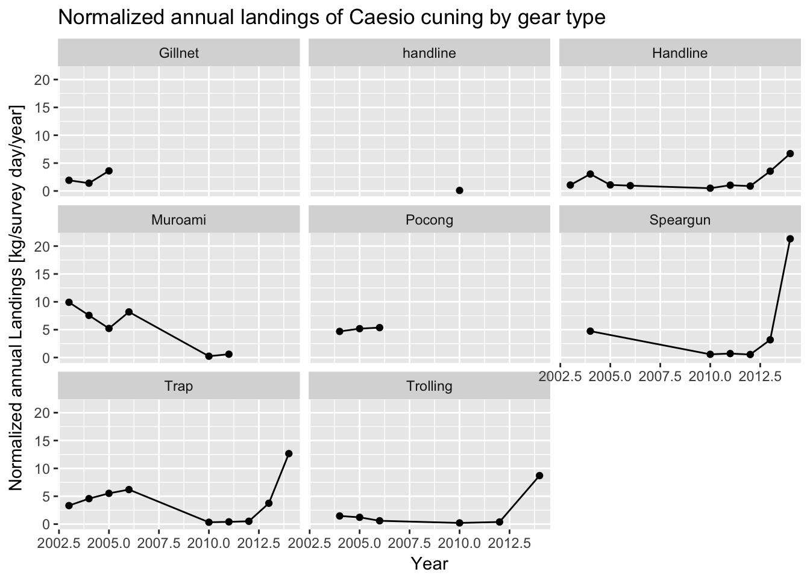

3 Fisheries Visualizations
This short document will walk you through some basic fisheries visualizations. You will first load packages that contain useful functions. You will next load your data. Finally, you’ll plot your data in a number of different ways, and also seeing what interesting things you can say about the fishery using these data
This is a very quick introduction, but a great resource for learning more is a free book called R for Data Science. Additionally, as you can always use R’s built in help functionality by using a question mark followed by a function name. For example, typing ?ggplot into the console will bring up a help document on ggplot.
3.1 Load libraries
The first step in any analysis is the load the packages you will need for your analysis. Loading packages allows you to use powerful functions not included in “base” R.
For this analysis, you will use the tidyverse package, which actually loads a group of useful packages including tidyr, dplyr, and ggplot2. tidyr and dplyr are very handy packages for manipulating data, while ggplot2 is one of the best packages from plotting data. You will also use lubridate, which helps dealing with dates and times.
library(tidyverse)
library(lubridate) 3.2 Load data
Next, you’ll load the data you’ll be using for the analysis using the read_csv function. First load the landings data which includes catch, effort, and length measurements. The data are stored as a csv under a “data” folder. Store these data to a data frame called landings_data. Next, load the life history parameter data file. These data are also stored as a csv under a “data” folder. Store these data to a data frame called life_history_parameters.
As data are loaded in, you’ll see that R automatically determines what type of variable each column represents - integers (for numbers), characters (for words), etc.
landings_data <- read_csv("_data/sample_landings_data.csv")
life_history_parameters <- read_csv("_data/life_history_parameters.csv")Let’s take a quick look at what’s in each of these data frames. We can use the head function to get a quick summary.
head(landings_data)## # A tibble: 6 × 8
## Year Date Trip_ID Effort_Hours Gear Species Length_cm
## <int> <chr> <int> <int> <chr> <chr> <dbl>
## 1 2003 4/30/03 1 10 Trap Caesio cuning 36
## 2 2003 4/30/03 1 10 Trap Caesio cuning 29
## 3 2003 4/30/03 1 10 Trap Caesio cuning 34
## 4 2003 4/30/03 1 10 Trap Caesio cuning 36
## 5 2003 4/30/03 1 10 Trap Caesio cuning 34
## 6 2003 4/30/03 1 10 Trap Caesio cuning 28
## # ... with 1 more variables: Weight_g <dbl>The landings_data data frame is from a fishery-dependent landing site survey. The species included in this data set is Caesio cuning, a yellowtail fusilier. The survey is conducted every few days at a major landing site, and thus is just a sub-sample of the total catch. However, it is conducted throughout the year and during each season, and at the largest landings site with fishers using several different gear types and fishing throughout the entire species range, so it is fairly representative of the total catch. You can see the data frame has eight columns, with each row being an individual fish catch measurement. The columns include the year and date when the measurement was collected, the fishing trip ID, how many hours were fished for each trip, what gear was used, the species, the length of the fish, and the weight of the fish. We’ll be able to use these data to create length-frequency histograms that describe the size structure of the population, as well as trends in catch and CPUE.
One thing we should do is format the year and date columns to ensure that R knows these represent years and dates as we humans think of them. We can use the mdy and year functions from the lubridate package to do this.
## Start with the landings data frame
landings_data <- landings_data %>%
## Turn the date column into a date format that R recognizes
mutate(Date = mdy(Date)) %>%
## Create a year column using a year format R recognizes
mutate(Year = year(Date))Let’s next look at the life_history_parameters data frame.
head(life_history_parameters)## # A tibble: 1 × 11
## Species Common L_inf k t0 M Wa
## <chr> <chr> <dbl> <dbl> <dbl> <dbl> <dbl>
## 1 Caesio cuning Yellowtail fusilier 62.2 0.32 -0.42 0.8915981 0.0208
## # ... with 4 more variables: Wb <dbl>, m50 <dbl>, m95 <dbl>, maxAge <int>The life_history_parameters data frame includes several important life history parameters that were found doing a literature review of this species. L_infinity, k, and t0 describe the age-to-length relationship using the von Bertalanffy growth equation. M represents natural mortality. Wa and Wb describe the length-to-weight relationship. m50 and m95 describe the lengths at which 50% and 95% of the fish are mature, respecitvely. maxAge is the maximum age of the fish.
3.3 Plot length data
Let’s first look at the length data from the catch, which gives an indication of the size structure and health of the population. To do this in R, you start by taking the landings data and working through a series of “pipes”, which progressively analyze the data from one step to the next and are shown with the %>% operation. Essentially, the output of one line is fed into the input of the next line. Once you’ve formatted the data, you next feed it into ggplot to plot the data. When using ggplot to build plots, you first initialize the ggplot, and then use the + operation to add additional features to the plot. In all of the code below, there are also some helpful comments to tell you what each line is doing. Comments start with the # operation, and are not evaluated by R - they are simply there to document the code. Let’s look at the length data for 2014, which is the most recent year of data available. We first filter the data to be only from 2014. We then create a histogram of the length data, which shows how many individuals of each size class were measured in the catch. On the histogram, we’ll also a vertical line to show the length at which fish mature to get a sense of how sustainable the catch is - the catch should be composed mostly of mature fish. This information comes from the life history parameter data input file.
## Start with the landings data frame
landings_data %>%
## Filter data to only look at length measurements from 2014
filter(Year == 2014) %>%
## Initialize ggplot of data using the length column
ggplot(aes(Length_cm)) +
## Tell ggplot that the plot type should be a histogram
geom_histogram() +
## Change x-axis label
xlab("Length [cm]") +
## Add figure title
ggtitle("Length histogram of Caesio cuning in the catch\nLength at 95% maturity shown as a red line.") +
## Add a red vertical line for m95, the length at which 95% of fish are mature. Any fish below this length may be immature. Use the life_history_parameter data frame to get this value.
geom_vline(aes(xintercept=life_history_parameters$m95),color="red") 
You might also be interested in seeing how the size composition varies by gear type. You can recreate the figure about, but separting the histograms out by gear type using ggplot’s “facet” functionality. It appears as if the size structure is about the same from each gear, although by far the most amount of fish are caught using speargun. Very few fish are caught using trolling.
## Start with the landings data frame
landings_data %>%
## Filter data to only look at length measurements from 2014
filter(Year == 2014) %>%
## Initialize ggplot of data using the length column
ggplot(aes(Length_cm)) +
## Tell ggplot that the plot type should be a histogram
geom_histogram() +
## Change x-axis label
xlab("Length [cm]") +
## Add figure title
ggtitle("Length histogram of Caesio cuning in the catch by gear type\nLength at 95% maturity shown as a red line.") +
## Add a red line form95, the length at which 95% of fish are mature. Any fish below this length may be immature. Use the life_history_parameter data frame to get this value.
geom_vline(aes(xintercept=life_history_parameters$m95),color="red") +
## This tells the figure to plot by all different gear types, known as facetting
facet_wrap(~Gear) 
Next we can calculate the percentage of mature fish in the catch in every year of the data frame. To do this, we add a column to the data frame that represents whether each fish is mature or not (represented by a 1 or 0), group the data frame by year, and then summarize for each year the percentage of mature fish out of the total number of sampled fish. Over 90% of the fish are mature throughout the time series, which is a great sign! This matches up with what we see in the histogram.
## Start with the landings data frame
landings_data %>%
## Add a column to the data that indicates whether each length measurement is from a mature or immature fish. If it's mature, this value should be 1; if immature, 0.
mutate(Mature = ifelse(Length_cm > life_history_parameters$m95,1,0)) %>%
## Group by year so we can see the percent mature for every year
group_by(Year) %>%
## The percentage mature is equal to the number of mature fish divided by the total number of fish and multiplied by 100
summarize(Percent_Mature = sum(Mature) / n() * 100) ## # A tibble: 9 × 2
## Year Percent_Mature
## <dbl> <dbl>
## 1 2003 98.57595
## 2 2004 98.62306
## 3 2005 97.73371
## 4 2006 100.00000
## 5 2010 91.80556
## 6 2011 99.77629
## 7 2012 99.65398
## 8 2013 99.46164
## 9 2014 99.557093.4 Plot landings data
Next, let’s plot a time series of daily landings data. We first group the data frame by date, so that we can next summarize the summed weight caught on each date. When we summarize the daily landings, we’ll also divide by 1000 to convert from g to kg. We then plot this using ggplot.
## Start with the landings data frame
landings_data %>%
## Group the data by date so we can calculate the total landings by date
group_by(Date) %>%
## For each date, sumamrize the sum of all daily landings. Also convert kilograms to grams by dividing by 1000.
summarize(daily_landings = sum(Weight_g/1000)) %>%
## Initialize a ggplot of daily landings versus date
ggplot(aes(x=Date,y=daily_landings)) +
## Tell ggplot that the plot type should be a scatter plot
geom_point() +
## Also add a line connecting the points
geom_line() +
## Change the y-axis title
ylab("Daily Landings [kg/day]") +
## Add a figure title
ggtitle("Daily landings of Caesio cuning") 
It is a little diffcult to observe trends here since there is a lot of variation between days, other than that there was no data collected between 2006 and 2010. Instead, you may wish to aggregate the catch data by year in order to look at trends in annual landings. This is very similar to the plot above, but we now group and summarize by Year instead of by Date. Because this particular survey only samples the catch on certain days, it does not represent the total volume of landed catch. Therefore, it’s important to not only sum the amount of catch each year, but also normalize the sampled catch by the number of sampling days. This will mean that trends represent actual increases or decreases in catch, not just increases or decreases in how frequently the catch is sampled.
Looking at this plot, it now becomes more clear that landings decrease significantly between 2004 and 2010, but have been increasing during the last few years. This could be indicative of a recovering fishery, or could mean increasing fishing pressure.
## Start with the landings data frame
landings_data %>%
## First, group the data by year
group_by(Year) %>%
## Next, summarize the total annual landings per year. Also convert from grams to kilograms by dividing by 1000. Also, normalize the annual catch by the number of survey days each year.
summarize(Annual_Landings_kg = sum(Weight_g,na.rm=TRUE)/1000/n_distinct(Date)) %>%
## Initialize a ggplot of annual landings versus year
ggplot(aes(x=Year,y=Annual_Landings_kg)) +
## Tell ggplot that the plot type should be a scatter plot
geom_point() +
## Also add a line connecting the points
geom_line() +
## Change the y-axis title
ylab("Normalized annual Landings [kg/survey day/year]") +
## Add figure title
ggtitle("Normalized annual landings of Caesio cuning") 
Again, you may be interested in looking across different gear types. Here, we now group the data frame by both the year and the gear type in order to summarize the total landings by year and by gear. To plot, we again use ggplot’s faceting functionality. Doing so, it now becomes clear that the recent increase in catch seems to be concentrated in speargun and trap fishing. Meanwhile, catch from muroami, a very destructive type of gear where nets are driven into the reef, has dropped to 0 since a ban of that gear in 2012 - a good sign that mangement regulation is working.
## Start with the landings data frame
landings_data %>%
## First, group the data by year
group_by(Year,Gear) %>%
# Next, summarize the total annual landings per year. Also convert from grams to kilograms by dividing by 1000. Also, normalize the annual catch by the number of survey days each year.
summarize(Annual_Landings_kg = sum(Weight_g,na.rm=TRUE)/1000/n_distinct(Date)) %>%
## Initialize a ggplot of annual landings versus year
ggplot(aes(x=Year,y=Annual_Landings_kg)) +
## Tell ggplot that the plot type should be a scatter plot
geom_point() +
## Also add a line connecting the points
geom_line() +
## Change the y-axis title
ylab("Normalized annual Landings [kg/survey day/year]") +
## Add figure title
ggtitle("Normalized annual landings of Caesio cuning") +
## This tells the figure to plot by all different gear types
facet_wrap(~Gear) 
3.5 Plot CPUE data
Finally, you may also be interested in plotting median catch-per-unit-effort (CPUE). CPUE is calculated by dividing the catch of each fishing trip by the number of hours fished during that trip. The median is taken in order to remove outliers - some fishers are much more efficient than others.
CPUE appears to have increased significantly during the last years. This may be due to increasing abundance in the water, which would be a good thing, but may also be indicative of increased gear efficiency coinciding with the transition to traps and spearguns, which may be concerning.
## Start with the landings data frame
landings_data %>%
## Group by year and Trip ID so that you can calculate CPUE for every trip in every year
group_by(Year,Trip_ID) %>%
## For each year and trip ID, calculate the CPUE for each trip by dividing the sum of the catch, converted from grams to kilograms, by the trip by the number of fishing hours
summarize(Trip_CPUE = sum(Weight_g/1000) / mean(Effort_Hours)) %>%
## Next, just group by year so we can calculate median CPUE for each year across all trips in the year
group_by(Year) %>%
## Calculate median CPUE for each year
summarize(Median_CPUE = median(Trip_CPUE)) %>%
## Initialize a ggplot of median CPUE versus year
ggplot(aes(x=Year,y=Median_CPUE)) +
## Tell ggplot that the plot type should be a scatter plot
geom_point() +
## Also add a line connecting the points
geom_line() +
## Change the y-axis title
ylab("Median CPUE [kg/hour]") +
## Add figure title
ggtitle("Median CPUE for Caesio cuning") 
When looking at all data together - almost all fish in the catch are mature, catch is increasing, and CPUE is increasing - all signs point to a fairly healthy fishery, which is likely recovering since the ban of muroami fishing nets.